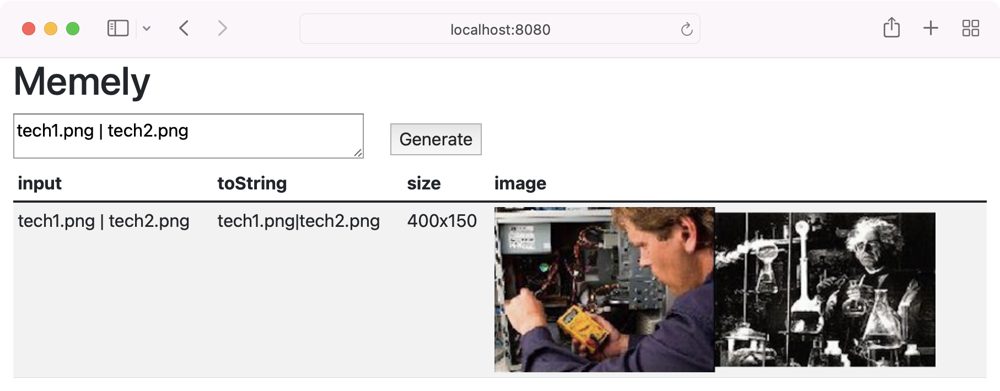
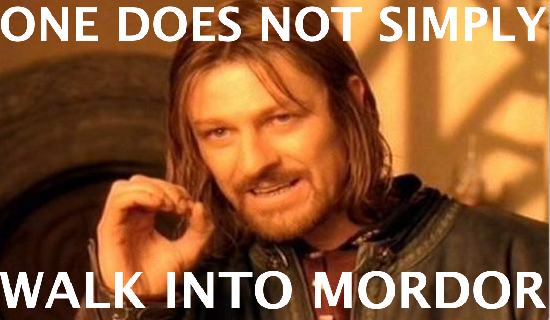

Problem Set 3: Memely
The deadlines for this problem set are shown on the course calendar.
In this problem set, we will explore parsers, recursive data types, and equality for immutable types.
Compared to the previous problem sets, we are imposing few restrictions on how you structure your code. In addition, much of the code that you write for problems in this problem set will depend on how you decided to implement earlier parts of the problem set. Read through the entire assignment before writing any code, and plan for iterating on your solution.
On several parts of this problem set, the classes and methods will be yours to specify and create, but you must pay attention to the PS3 instructions sections in the provided documentation.
You must satisfy the specifications of the provided interfaces and methods. You are, however, permitted to strengthen the provided specifications or add new methods. On this problem set, unlike previous problem sets, we will not be running your tests against any other implementations.
On this problem set, Didit provides less feedback about the correctness of your code:
- It is your responsibility to examine Didit feedback and make sure your code compiles and runs properly for grading.
- However, correctness is your responsibility alone, and you must rely on your own careful specification, testing, and implementation to achieve it.
Please remember to push early: we cannot guarantee timely Didit builds, especially near the problem set deadline.
Get the code
Ask Didit to create a remote
psets/ps3repository for you on github.mit.edu.Clone the repo. Find the
git clonecommand at the top of your Didit assignment page, copy it entirely, paste it into your terminal, and run it.cd ps3-«username», runnpm install, and open in Visual Studio Code. See Problem Set 0 for if you need a refresher on how to create, clone, or set up your repository.For macOS users who get an error from
npm installthat seems to be related to installing canvas, try installing Homebrew and then use this workaround to install some libraries needed bycanvas. If your macOS version is still 10.x.x, then you may also need to upgrade macOS.
Overview
Memes are fun. They would be even more fun if we could program them. In this problem set, we will implement a language that generates captioned image memes!
The meaning of an expression in this language is a generated image, a 2D array of pixels with a specific width and height. All widths and heights in the language are positive integers.
The two primitives of the language are image files, represented by filenames, e.g.:
and captions, represented as quoted strings, e.g.:
An image filename loads the named image from a library of images stored as files.
Even though operating systems allow a variety of characters in a filename, in this language a filename may consist of letters, digits, or periods, and may also contain hyphens - and underscores _ as long as they are not the first character in the filename.
The image file format may be any format that web browsers widely support.
If the image in the file has zero width or zero height (which is actually forbidden by most image formats), then behavior is undefined.
A caption produces an image showing the given text as a single line with no word-wrapping. A caption may contain any characters except newlines and double-quotes (though how the font actually displays unusual characters, like emojis, is unspecified). The font, color, and size of the text is unspecified, but must be reasonably readable. (If you choose to use a font other than the default font, make sure all the public tests render correctly on Didit.) The width and height must be positive and big enough to not crop any of the text. Extra margin or padding is permitted but unspecified. The background of a caption should be transparent, so that it can be placed on top of other images if the user so desires.
The language includes several operators to juxtapose, overlay, and resize images, described next.
The | operator glues images together side-by-side, e.g.:
A.jpg | B.jpg | C.jpgproduces a horizontal three-panel cartoon strip.
The --- operator glues images together top-to-bottom, e.g.:
1.jpg --- 2.jpg --- 3.jpgproduces a vertical three-panel strip.
Space, tab, carriage return, and newline characters around symbols are irrelevant and ignored, and any string of at least 3 - characters can be used to mean a single --- operator, so this can also be written:
1.jpg
--------
2.jpg
------
3.jpgSide-by-side gluing has higher precedence than top-to-bottom gluing. For example:
A1.jpg | B1.jpg | C1.jpg
-----------------------------
A2.jpg | B2.jpg | C2.jpgproduces a 6-panel cartoon laid out in 2 rows of 3 images each. Parentheses can be used to group expressions and override precedence, so if the six image files are all the same size, here is another way to write the same layout:
(A1.jpg --- A2.jpg) | (B1.jpg --- B2.jpg) | (C1.jpg --- C2.jpg)When images of different sizes are glued together side-by-side, the shorter image is centered vertically relative to the taller image, and the resulting combination has the height of the taller image. Similarly, when different-sized images are glued top-to-bottom, the narrower image is centered horizontally relative to the wider image. In both cases, if centering the smaller image requires placing it at a fractional pixel position, then it may be placed instead at an integer position within ±1 pixel. The “empty space” around the smaller image should be transparent.
The language has two more combiner operators that overlay an image onto another image.
The caret ^ places its second argument over the top part of its first argument so that the tops of both images are aligned, as in:
boromir.jpg ^ "One does not simply"Similarly, the underscore _ places its second argument over the bottom part of its first argument so that the bottoms are aligned:
boromir.jpg _ "walk into Mordor"The arguments of ^ and _ can of course be any expression, even though these are most often used with captions.
For both operators, if the two images have different widths, then the narrower image is centered horizontally relative to the wider image, with the same rule for fractional pixels as above.
The resulting image’s width is the maximum of the two image widths, and likewise for height.
Finally, any expression can be explicitly resized using the @ operator:
red.jpg @ 300x200which rescales the image (i.e. stretches or shrinks it) so that its width is 300 pixels and height is 200 pixels.
Width and height must be either positive integers, or ?, which means that the corresponding dimension should be a legal width or height that preserves the aspect ratio of the image as closely as possible.
For example:
boromir.jpg @ 100x?This expression resizes boromir.jpg from its original 550x325 dimensions to 100x59, because the resulting aspect ratio 100/59 ≅ 1.6949 is as close as possible to the original aspect ratio 550/325 ≅ 1.6923.
If both width and height are ?, the expression is invalid and should produce a syntax error.
The aspect-ratio-preserving ? is particularly useful for captions, for example:
boromir.jpg ^ ( "One does not simply" @ 550x? )This expression resizes the caption to fill the width of boromir.jpg without making the text look stretched or squashed.
The precedence of the operators goes in the order: @ ^ _ | ---.
The resize @ operator has highest precedence, applied first.
The top-overlay operator ^ has next highest precedence, followed by the bottom-overlay operator _, so that A _ B ^ C means A _ (B ^ C).
Then the side-by-side glue operator | is applied, and finally the top-to-bottom glue operator --- has lowest precedence.
Precedence can be overridden by parentheses.
Note that the characters _ and - can also appear inside filenames.
In order to use operators like _ and --- immediately after a filename, the operator must be separated from the filename either by a parenthesis, as in (cat.jpg)_"meow", or by whitespace, as in cat.jpg _ "meow".
Without that separation, the _ and - characters are considered part of the filename.
The system has a console user interface where users may input expressions and see their results. When the user enters an expression on the console, that expression becomes the current expression and is echoed back to the user, possibly with reformatting (user input in green):
> boromir.jpg ^ "One does not simply" _ "walk into Mordor" (boromir.jpg ^ "One does not simply") _ "walk into Mordor" > tech1.png ---------- tech2.png ---------- tech3.png tech1.png --- (tech2.png --- tech3.png)
A command starts with !.
The command operates on the current expression.
Valid commands:
!size
prints the final size of current expression in the formWxH. This command does not update the current expression.
!image
generates the image represented by the current expression and displays it in a window. This command does not update the current expression.
Entering an invalid expression prints an error but does not update the current expression. The error should include a human-readable message but is not otherwise specified.
> tech1.png | tech2.png tech1.png|tech2.png > tech3.png -|-|- tech4.png unknown expression > !size 400x150 > !image
The system also has a web user interface. Users may input an expression and click Generate to see the parsed expression echoed back, the size, and the generated image.

Both user interfaces rely on these three provided function specifications in the code for this problem set:
And there are two more required specifications in expression.ts:
Problem 1: we will create the MemeExpression data type to represent expressions in the program.
Problem 2: we will create the parser that turns a string into a MemeExpression, and implement parse().
Problems 3-4: we will add new MemeExpression operations for computing the size of an expression and generating an image from an expression, and implement the corresponding commands size() and image().
First, do problems 1–4 for a subset of the language with only three features: filenames, side-by-side glue |, and resize @ with numbers (not ?).
- The Didit public tests use only these operators, and alpha autograding will put most of the weight to these operators. Getting this minimal subset to work first will help you understand how all the pieces of the problem set work together.
- The autograder cannot give you any credit at all until you do problems 1 & 2 with those features so that
parse()returns working instances of yourMemeExpressionADT.
After completing the problem set with those three features, then go back and extend what you’ve done to support the additional features: captions, top-to-bottom glue ---, the overlay operators ^ and _, and resize @ with ?.
Provided Code
The starting code includes a file examples.ts, with example code showing how to use the Canvas API to:
- read an image file into memory
- create new images in memory for drawing on
- draw text into an image
- draw an image with a particular position and size
- examine the pixels of an image for unit testing
This is staff-provided code, which means you are free to draw from it without attribution.
The starting code also includes imagelibrary.ts, which provides an API you must use in your implementation:
createCanvas(..)to get a newCanvasinstanceImageLibrarymethodgetImage(..)to get the image data for a filename from the image library
This will allow your MemeExpression type to work both in Node.js (for testing and the console user interface) and in the browser (for the web user interface).
Problem 1: Representing expressions
Define an immutable, recursive abstract data type to represent expressions as abstract syntax trees.
Your AST should be defined in the provided MemeExpression interface (in expression.ts) and implemented by several concrete variants, one for each kind of expression.
You should have separate variant classes for each operator in the language, written in expression-impls.ts.
Concrete syntax in the input, such as parentheses and whitespace, should not be represented at all in your AST.
It must be legal to create and use an abstract syntax tree containing filenames that do not currently exist or have not been added to the image library.
Only operations that actually require the image data (size and image) should try to read the image data.
Others (like toString or equalValue) should not.
For creating your AST type, you may find these examples useful:
1.1 MemeExpression
To repeat, your data type must be immutable and recursive. Follow the recipe for creating an ADT:
Spec. Choose and specify operations. For this part of the problem set, the only operations
MemeExpressionneeds are creators and producers for building up an expression, plus the standard observerstoString()andequalValue(). We are strengthening the specs for these standard methods; see below.Test. Partition and test your operations in
expression.test.ts, including tests fortoString()andequalValue(). Note that we will not run your tests on any implementations other than yours.Code. Write the rep for your
MemeExpressionas a data type definition inexpression-impls.tswhere it says// Data type definition. Implement the variant classes of your data type.
The variant classes are considered part of the
MemeExpressiontype’s rep, so a single good test suite forMemeExpressioncovers the variants.Since those variant classes are part of the rep, we would like our tests not to refer directly to them. We can achieve that by using
parse(..)to createMemeExpressionvalues in our tests. But usingparsealso means we would not be able to run the tests at all until after building the parser in Problem 2.Instead, we again recommend iteration:
Option 1: for now, write tests that directly create instances of your variant classes. You will need to import your variants from
expression-impls.tsinexpression.test.ts. Write yourself aTODOto delete those imports after you implementparse(). At that point, refactor your tests to useparse()instead.Option 2: define other creator and producer operations for
MemeExpression, implement them as functions inexpression.tsthat call the variant constructors, and use these functions in your tests. You will need to import your variants fromexpression-impls.tsinexpression.ts. The functions must have specs written in terms of abstract image-meme expressions, not in terms of concrete representation! Decide later whether to keep these functions or useparse()instead.
Since we can create and use ASTs without reading image data, none of the specs, tests, or implementation in this problem should use
ImageLibrary. This will be true in Problem 2 as well.Remember to include a TypeDoc comment above every class and every method you write; define abstraction functions and rep invariants, and write
checkRep(); and document safety from rep exposure.
Remember the advice about iterating. Don’t spend hours just on Problem 1, implementing every variant you will need, or making your test partitions perfect.
Instead, plan to iterate.
Start with only a couple variants of your data type, with a couple tests, and a starting implementation of toString() and equalValue().
Then move on to Problems 2-4, just using the subset of the language with those variants.
Then iterate, coming back to Problem 1 to flesh out your specs, add more tests, and add more implementation to support more of the expression language.
1.2 toString()
Define the toString() operation on MemeExpression, following the spec/test/code recipe.
The output string must be a valid expression as defined above.
You have the freedom to decide how to format the output with whitespace and parentheses for readability, but the expression must have the same meaning as an image.
The required strengthened spec for toString() is already shown in expression.ts.
You can strengthen the spec further if you wish, but it’s not necessary for the spec to be deterministic.
Your toString() implementation must be recursive, and must not use instanceof.
Remember that your tests must obey the spec. If your toString() tests expect a certain formatting of whitespace and parentheses, you must specify this formatting in your spec.
1.3 equalValue()
Define the equalValue() operation on your AST to implement structural equality.
The required spec for equalValue() is already shown in expression.ts.
You can strengthen it further if you wish.
Structural equality defines two expressions to be equal if:
- the expressions contain the same filenames, captions, dimensions (numbers and
?), and operators; - those filenames, captions, dimensions, and operators are in the same order, read left-to-right;
- and they are grouped in the same way.
For example, the AST for a.jpg ^ "title" is not equal to the AST for "title" ^ a.jpg, but it is equal to the ASTs for a.jpg^"title", (a.jpg ^ "title"), and (a.jpg) ^ ("title").
The AST for (A | B) --- (C | D) is not equal to the AST for (A --- C) | (B --- D) even though they both may generate the same 2×2-panel meme.
For n-ary groupings where n is greater than 2:
- Such expressions must be equal to themselves.
For example, the ASTs for
A | B | Cand(A | B | C)must be equal. - However, whether they are equal or not to different groupings with the same image meaning is not specified, and you should choose an appropriate specification and implementation for your AST.
For example, you must determine whether the ASTs for
(A | B) | CandA | (B | C)are equal.
Remember: concrete syntax, including parentheses, should not be represented in your AST. Grouping, for example, should be reflected in the AST’s structure.
Be sure that AST instances which are considered equal according to this definition and according to equalValue() also satisfy observational equality.
Your equalValue() must be recursive, and it should use instanceof to test the variant of the expression it is comparing with: see the section “Equality” in Recursive Data Types.
Commit to Git. Once you’re happy with your solution to this problem for the minimal language, commit, push, and continue on.
Iterate. After completing the problem set with just those features, come back and update your work, starting with the MemeExpression specs.
Problem 2: Parsing expressions
Now we will create the parser that takes a string and produces a MemeExpression value from it.
The entry point for your parser should be parse() from expression.ts.
A.jpg | B.jpg --- C.jpg | D.jpg
A.jpg --- B.jpg --- C.jpg
((A _ B)^C)---D
base.jpg _ ("all your base"---"are belong to us")
A@1x2@?x3@4x?
filenames can have dashes and underscores, so
A.jpg_is parsed as a filename
Examples of optional inputs (extensions to the language that you may want to design and support):
You may consider the optional inputs invalid, or you may choose to support additional features (like new operators) in the input.
However, your system may not produce an output with a new feature unless that feature appeared in its input.
This way, a client who knows about your extensions can trigger them, but clients who don’t know won’t encounter them unexpectedly.
You may not use any of the characters reserved by the required syntax (e.g. -, |, etc.) or the console UI (!) in your additional features.
2.1 Write a grammar
Write a ParserLib grammar for expressions as described in the overview.
A starting ParserLib grammar can be found in expressionparser.ts.
This starting grammar recognizes filenames, side-by-side gluing, and @-resizing with numbers (not ?).
For more information on ParserLib, see:
- the reading on parsers
- example code for compiling the parser and processing a parse tree
- Documentation for ParserLib
The starting grammar already has a regular expression that is adequate for recognizing the filenames allowed by the language. This image-meme language supports a more restricted set of filenames than your operating system probably does, because the language must be cross-platform.
2.2 Implement parse()
Implement parse() by following the recipe:
Spec. The spec for this method is given, but you may strengthen it if you want to make it easier to test. Remember that it must be legal to parse an expression containing filenames that do not currently exist or have not been added to the library, since parsing does not depend on image data from the files.
As in problem 1, none of the specs, tests, or implementation in this problem should use
ImageLibrary.Test. Write tests for
parse()and put them inexpression.test.ts. Note that we will not run your tests on any implementations other than yours.Now that you are implementing
parse(), it’s a good idea to review the spec forMemeExpression.toString(), which specifies a testable relationship betweenparse(),equalValue(), andtoString().If you followed one of our recommendations in Problem 1 to start by writing tests without
parse()…If you went with option 1 and wrote tests that directly construct variant classes, refactor those tests to use
parse(). Notice that they are now covering partitions in yourparse()testing strategy. Stop importing your variants inexpression.test.ts: it should no longer referenceexpression-impls.tsat all.If you went with option 2 and wrote tests that use other creator and producer operations you defined, decide whether to keep those operations or remove them in favor of
parse(). Notice that (depending on their specs and the spec ofparse()) they might help you testparse()independently of other operations, and test other operations independently ofparse(). If you remove them, stop importing your variants inexpression.ts.
Code. Implement
parse()inexpression.tsso that it calls the parser generated by your ParserLib grammar. The reading on parsers discusses how to call the parser and construct an abstract syntax tree from it, including code examples. The starting code for this problem set includes a skeletonexpressionparser.tsthat you can work from. Keepparse()itself extremely simple: it should be no more than glue code, calling a function likeparseExpressioninexpressionparser.tsthat has all the implementation.
2.3 Run the console interface
Now that MemeExpression values can be both parsed from strings with parse() and converted back to strings with toString(), you can try entering expressions into the console interface.
Run the console interface using npm start.
Its prompt will allow you to type expressions and see the result.
Try some of the expressions from the top of this handout.
Commit to Git. Once you’re happy with your solution to this problem (first for the minimal language, later for the full language), commit and push!
Problem 3: Size
The !size command takes an expression and prints the width W and height H of the image it would generate in the form WxH.
It should follow the size calculation rules described in the overview.
For example, the following are correct size results. (Hover or tap on an input expression to see the sizes of its image files.)
tech3.png --- tech4.png
→200x310
(tech3.png --- tech4.png)@1000x1000
→1000x1000
(tech3.png --- tech4.png) _ black.png
→200x310
"tech support"
→ ···digits···x···digits···
width and height of a caption may vary depending on platform and font choice
tech3.png@50x?
incorrect:50x37.5
correct:50x38
(because sizes must be integers, and 50/38 is closest to original aspect ratio 200/150)
For getting sizes of image files and text captions, you may find the following useful:
examples.ts, which you can find in the starting code for the problem set- Canvas API
Warning: you must use the imagelibrary.ts API, which exports ImageLibrary and createCanvas(..).
Do not import or use the canvas or fs modules directly.
3.1. Add an operation to MemeExpression
You should implement size as a method on your MemeExpression type, defined recursively.
The signature and specification of the method are up to you to design, but:
- It would be wise for your size operation to return a more useful data type than
string— perhaps a simple record type of your own devising. - The size operation should take an
ImageLibraryas an argument and use that library for named images.
Whenever possible, do not read any image data in order to compute size. In fact, there are some expressions whose size you can determine without reading any image data at all, and you are encouraged to design your operation to produce sizes for such expressions even if, for example, they refer to filenames that are not in the image library.
- Spec.
Define your operation in
MemeExpressionand write a spec. - Test.
Put your tests in
expression.test.ts. Note that we will not run your tests on any implementations other than yours. - Code.
The implementation must be recursive.
It must not use
instanceof, nor any equivalent operation you have defined that checks the type of a variant.
The provided expression.test.ts creates library: ImageLibrary near the top of the file.
You can create other ImageLibrary instances in your tests if necessary.
For any part of the problem set, if your tests use additional images, add them to the img directory.
Do not commit large image files to Git!
Keep images small to ensure that Didit can clone and build your repo.
3.2 Implement the size command
In order to connect your size operation to the user interfaces, and also to the Didit autograder, you need to implement the size() function in commands.ts.
Keep size() extremely simple.
It should be no more than glue code, calling your size operation and converting the result to a string.
Keep it small so that you don’t need to write a separate test suite for it: your existing tests for your size operation should suffice.
Specifically, the body of size() must be at most 3 lines long, consisting of at most a couple simple method calls, possibly using local variables, plus a return statement.
All of the methods that it calls should be already well-tested, either by your MemeExpression test suite or by TypeScript itself.
If your size() method is more complex than that — for example, with control statements like if or while, or arithmetic operations like + or < or Math.max, or recursive calls to itself — then stop! and discuss your design with course staff, because this is a sign that the size operation you designed for your MemeExpression type is not powerful enough.
Iterate on the design and tests for your size operation above.
- Spec. The spec for this operation is given, but you may strengthen it if you want.
- Test. Keep this operation extremely simple so you don’t have to test it separately.
- Code.
Implement
size()as simply as possible.
3.3 Run the console interface
We’ve now implemented the !size command in the console interface.
Run npm start and try some sizes at the prompt.
Commit to Git. Once you’re happy with your solution to this problem (first for the minimal language, later for the full language), commit and push!
Problem 4: Image generation
The image operation takes an expression and generates an image from it. You may strengthen this spec if you wish.
For example, the following are representative outputs for generated images. Their sizes have been changed for inclusion in this handout: the dimensions of the images shown here do not satisfy the spec.
boromir.jpg ^ "ONE DOES NOT SIMPLY"@550x? _ "WALK INTO MORDOR"@550x?
→
black.png@600x50 ^ "TECH SUPPORT"@?x50 ---------------------------------- tech1.png | tech2.png@200x150 | tech3.png ---------------------------------- ( black.png@200x25 ^ "What my friends think I do"@?x15 | black.png@200x25 ^ "What my mom thinks I do"@?x15 | black.png@200x25 ^ "What society thinks I do"@?x15 ) ---------------------------------- black.png@600x25 ---------------------------------- tech4.png | tech5.png@200x160 | tech6.png ---------------------------------- ( black.png@200x25 ^ "What my boss thinks I do"@?x15 | black.png@200x25 ^ "What I think I do"@?x15 | black.png@200x25 ^ "What I actually do"@?x15 ) ---------------------------------- black.png@600x25→
For generating images, you may find the following useful:
examples.ts, which you can find in the starting code for the problem set- Canvas API
You must use the imagelibrary.ts API, which provides ImageLibrary and createCanvas(..).
Do not import or use the canvas or fs modules directly.
4.1 Add an operation to MemeExpression
You should implement image generation as a method on your MemeExpression type, defined recursively.
The signature and specification of the method are up to you to design, but:
- The operation should take an
ImageLibraryas an argument and use that library for named images. - As mentioned in the box above, don’t convert — as appealing as its type name is! — to
Image.
- Spec.
Define your operation in
MemeExpressionand write a spec. - Test.
Put your tests in
expression.test.ts. Note that we will not run your tests on any implementations other than yours. - Code.
The implementation must be recursive (perhaps by calling recursive helper methods).
It must not use
instanceof, nor any equivalent operation you have defined that checks the type of a variant class.
You may find it useful to add more operations to MemeExpression to help you implement the image operation.
Spec/test/code them using the same recipe, and make them recursive as well where appropriate.
Your helper operations should not simply be a variation on using instanceof to test for a variant class.
Since your image operation produces an image, your tests may need to inspect properties of that image, like its width, height, and possibly some values of its pixels.
examples.ts included in the starting code has examples of doing this inspection.
4.2 Implement the image command
In order to connect your image operation to the user interfaces, we need to implement the image() function in commands.ts.
Like size(), as discussed above, this function should be simple glue code that calls the image-generation operation of your MemeExpression data type.
The body of image() must be at most 3 lines long, consisting of at most a couple calls to already well-tested methods, possibly using local variables, plus a return statement.
Keep it small so that you don’t need separate tests for this function.
- Spec. The spec for this operation is given, but you may strengthen it if you want.
- Test. Keep this operation extremely simple so you don’t have to test it separately.
- Code.
Implement
image()as simply as possible.
4.3 Run the console interface
We’ve now implemented the !image command in the console interface.
Run npm start and try using some commands at the prompt.
4.4 Run the web interface
So far we have been running the image meme system in Node.js, by running the console interface and the tests. But the JavaScript that the TypeScript compiler emits can also run in the web browser.
First, start the provided web server using npm run web.
This tiny Node.js web server will send the code and the image files to your browser.
It does not run the code: all the parsing and image generation will done by your browser’s JavaScript engine.
When you change your code, you do not need to restart the web server.
Of course you do need to recompile your TypeScript into JavaScript (e.g. npm run compile), but once that’s done you can reload the web page to use your updated code.
If you don’t want to manually recompile each time, you can run npm run watch in another terminal.
That command will keep running, and automatically recompile your code whenever you edit and save a .ts file.
(If you imported canvas, fs, or other modules directly, your code may not work in the web interface.
Make sure you are only using the exports from imagelibrary.ts.)
Commit to Git. Once you’re happy with your solution to this problem (first for the minimal language, later for the full language), commit and push!
Before you’re done
Make sure you have documented specifications, in the form of properly-formatted TypeDoc comments, for all your types and operations.
Make sure you have documented abstraction functions and representation invariants, in the form of a comment near the field declarations, for all your implementations.
In addition, document how the type prevents rep exposure. See Documenting the AF, RI, & SRE.
Make sure all types use
checkRep()to check the rep invariant and implementtoString()with a useful representation of the abstract value. Remember thatMemeExpression.toString()has a stronger spec thanObject.toString().Make sure you specify, test, and implement
equalValue()for all immutable types. Remember thatMemeExpression.equalValue()has a spec you may strengthen but must not weaken.When a method is specified in an interface and then implemented by a concrete class, use
@inheritdocto point to the interface spec, to indicate the method has the same spec.Make sure you have a thorough, principled test suite for every abstract data type. Note that the
MemeExpressiontype’s variant classes are considered part of its rep, so a single good test suite forMemeExpressioncovers the variants, too.
Submitting
Make sure you commit AND push your work to your repository on github.mit.edu.
We will use the state of your repository on github.mit.edu as of 9:00pm EDT on the deadline date.
When you git push, the continuous build system attempts to compile your code and run the public tests (which are only a subset of the autograder tests).
You can always review your build results at didit.mit.edu/6.102/sp26.
Didit feedback is provided on a best-effort basis:
- There is no guarantee that Didit tests will run within any particular timeframe, or at all. If you push code close to the deadline, the large number of submissions will slow the turnaround time before your code is examined.
- If you commit and push right before the deadline, it’s okay if the Didit build finishes after the deadline, because the commit-and-push was on time.
- Passing some or all of the public tests on Didit is no guarantee that you will pass the full battery of autograding tests — but failing them is almost sure to mean lost points on the problem set.
Grading
Your overall ps3 grade will be computed as approximately:
~30% alpha autograde (including online exercises) + ~20% alpha manual grade + ~25% beta autograde + ~25% beta manual grade (including code reviewing)
The same autograder test cases will be used in both alpha to beta, but their point values will differ.
In order to encourage incremental development, alpha autograding will put most of its weight on tests using only filenames, |, and @ with numbers (not ?), and less weight on tests that use the other features of the language (captions, @ with ?, ---, ^, and _).
On the beta, autograding will spread its weight across the entire language.
Manual grading of the alpha will examine the specs of your expression operations, the internal documentation (data type definition, AF, RI, etc.) of your expression data type, and the implementations of expression variants. Manual grading of the beta may examine any part, including re-examining ADT implementations, and how you addressed code review feedback.